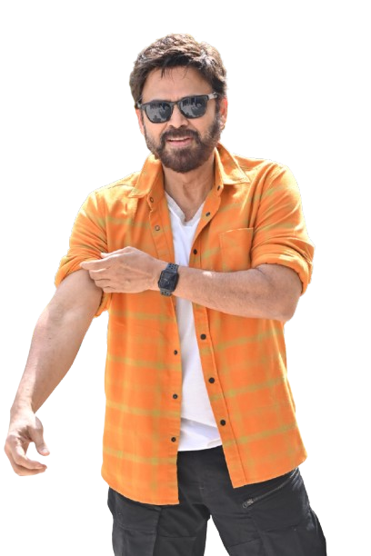
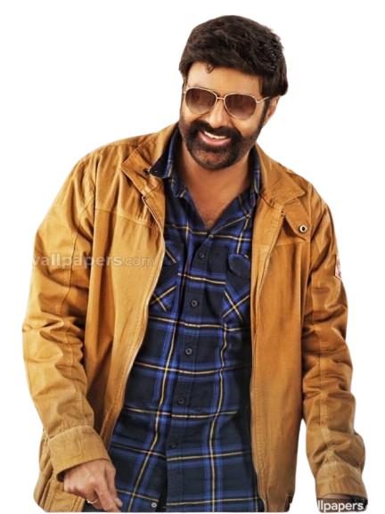
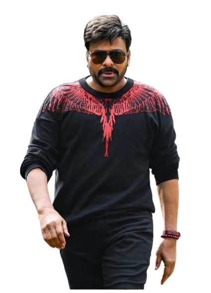
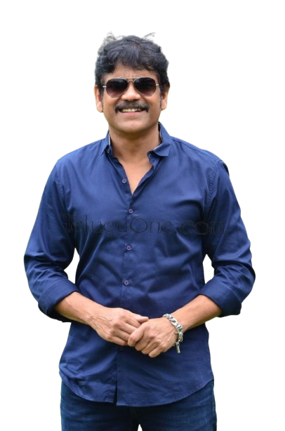
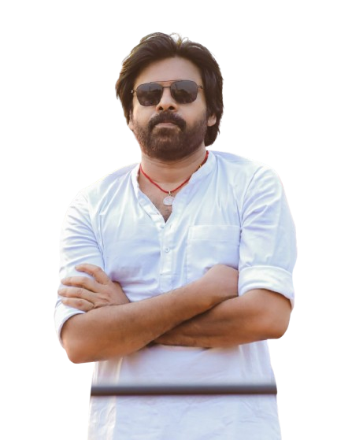
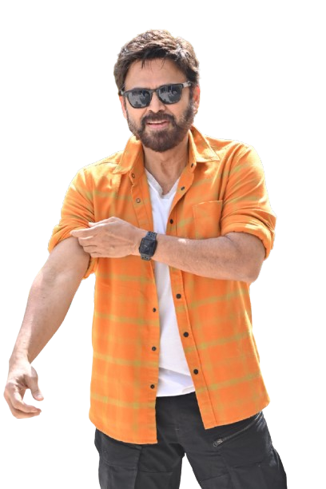
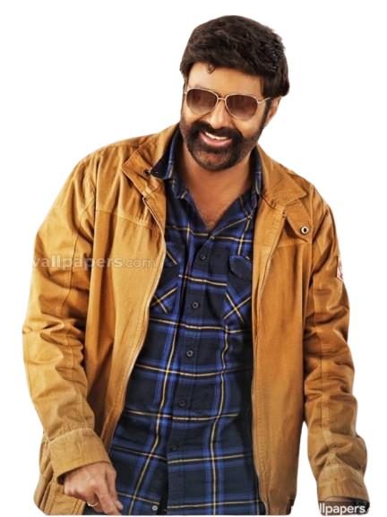
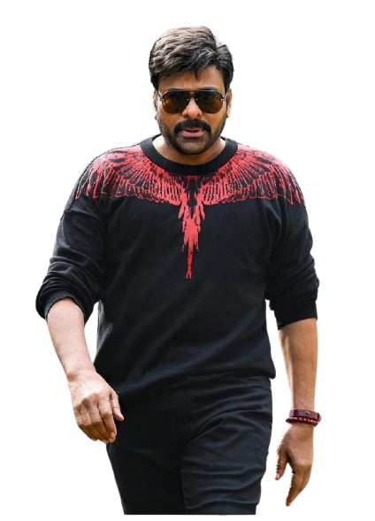
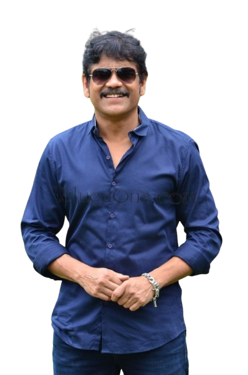
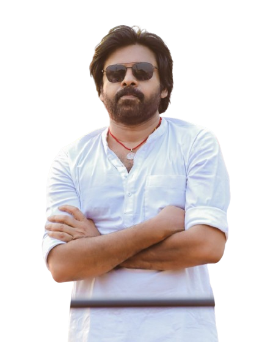

Konidela Chiranjeevi (born Konidela Sivasankara Varaprasad; 22 August 1955) is an Indian actor, politician and philanthropist known for his work in Telugu cinema. Referred to in the media as "Mega Star", he is widely regarded as one of the most successful and influential actors in the history of Indian cinema.[4][5] Chiranjeevi holds the record for the most "Industry Hits" in Telugu cinema, with eight films emerging as the top-grossers of their time—a feat unmatched by any actor in the industry's 100-year history.[6] He is also celebrated as one of the finest dancers in Indian cinema. Chiranjeevi made his acting debut in 1978, initially gaining recognition for his supporting, anti-hero, and antagonist roles. He later transitioned to lead roles with notable success. His breakthrough came with the 1983 film Khaidi, which became the highest-grossing Telugu film at the time and established him as a leading actor in the industry. Throughout the 1980s and early 1990s, Chiranjeevi starred in various "Industry Hits"—highest-grossers of all time—like Pasivadi Pranam (1987), Yamudiki Mogudu (1988), Attaku Yamudu Ammayiki Mogudu (1989), Jagadeka Veerudu Athiloka Sundari (1990), Gang Leader (1991), and Gharana Mogudu (1992).[6] Notably, Gharana Mogudu was the first South Indian film to earn over ₹10 crore in distributor share,[9] prompting The Week magazine to label him "Bigger than Bachchan" and "the new money machine."[10] For his role in Aapadbandhavudu (1992), Chiranjeevi was paid ₹1.25 crore, making him the highest-paid actor in India at the time and the first Indian actor to command a ₹1 crore remuneration for a film.[11] During this period, he received widespread critical acclaim for his performances in Swayamkrushi (1987), Rudraveena (1988), and Aapadbandhavudu (1992), showcasing his versatility as an actor who excelled in both commercial blockbusters and critically acclaimed films. Notably, Swayamkrushi was screened at the Moscow International Film Festival, while Rudraveena, which he co-produced, won the National Film Award for Best Feature Film on National Integration. In the late 1990s and early 2000s, Chiranjeevi continued to dominate the box office with films like Master (1997), and Choodalani Vundi (1998). His 2002 film Indra was the highest-grossing Telugu film for many years, and socially impactful films like Tagore (2003) and Shankar Dada M.B.B.S. (2004) became major blockbusters, further cementing his legacy.
Nandamuri Balakrishna (born 10 June 1960), also known as Balayya or NBK, is an Indian actor, film producer and politician known for his works in Telugu cinema.[2][3] Balakrishna is an elected member of the Andhra Pradesh Legislative Assembly from Hindupuram constituency since 2014.[4] The sixth son of actor and former Chief Minister of Andhra Pradesh N. T. Rama Rao, Balakrishna made his debut as a child artist at the age of 14 with the film Tatamma Kala (1974).[5][6] Balakrishna is a recipient of three state Nandi Awards, three SIIMA Awards, and an IIFA Award. [7] In 2012, Balakrishna was the chief guest at the 43rd IFFI.[8] Currently, he serves as the Chairman of Basavatarakam Indo-American Cancer Hospital and Research Institute in Hyderabad. Balakrishna starred in more than hundred feature films in a variety of roles.[10] He achieved commercial success, with works such as Sahasame Jeevitham (1984), Janani Janmabhoomi (1984), Mangammagari Manavadu (1984), Apoorva Sahodarulu (1986), Muvva Gopaludu (1987), Muddula Mavayya (1989), Nari Nari Naduma Murari (1990), Lorry Driver (1990), Aditya 369 (1991), Rowdy Inspector (1992), Bangaru Bullodu (1993), Bhairava Dweepam (1994), Peddannayya (1997), Samarasimha Reddy (1999), Narasimha Naidu (2001), Lakshmi Narasimha (2004), Simha (2010), Legend (2014), Akhanda (2021) and Bhagavanth Kesari (2023). Balakrishna experimented with biographical, historical and hagiographical films. He played poet Vemulawada Bheemakavi in Vemulawada Bheemakavi (1976); Abhimanyu in Daana Veera Soora Karna (1977); Jahangir in Akbar Salim Anarkali (1979); Narada in Sri Tirupati Venkateswara Kalyanam (1979); Sidda in Srimadvirat Veerabrahmendra Swami Charitra (1984); Krishnadevaraya in Aditya 369 (1991); Satya Harischandra and Dushyanta in Brahmarshi Viswamitra (1991); Lord Krishna and Arjuna in Sri Krishnarjuna Vijayam (1996); Pundarika in Pandurangadu (2008); N. T. Rama Rao in NTR: Mahanayakudu (2019) and NTR: Kathanayakudu (2019); and Lord Rama in Sri Rama Rajyam (2011) featured at the 42nd IFFI.
Akkineni Nagarjuna Rao[a] (born 29 August 1959), known mononymously as Nagarjuna, is an Indian actor, film producer and entrepreneur who works predominantly in Telugu cinema. Apart from Telugu films, he has also acted in a few Hindi abd Tamil films. He received two National Film Awards namely, for Ninne Pelladata (1996), which he produced won the Best Feature Film in Telugu and a Special Mention as actor for Annamayya (1997), ten state Nandi Awards, and three Filmfare Awards South.In 1989, he starred in the Mani Ratnam-directed romantic drama film Geetanjali, which won the National Film Award for Best Popular Film. In the same year, he appeared in the commercially successful Siva, an action film directed by Ram Gopal Varma; featured at the 13th IFFI' 90.[4][5] Nagarjuna made his Bollywood debut with the 1990 Hindi remake of Shiva. Known by his works in biographical films, he played 15th-century composer Annamacharya in Annamayya (1997), Yavakri (the son of the ascetic Bharadvaja) in Agni Varsha (2002), Major Padmapani Acharya in the war film LOC: Kargil (2003), 17th-century composer Kancherla Gopanna in Sri Ramadasu (2006), Suddala Hanmanthu in Rajanna (2011), Sai Baba of Shirdi in Shirdi Sai (2012), Chandaludu in Jagadguru Adi Shankara (2013), and Hathiram Bhavaji in Om Namo Venkatesaya Nagarjuna has largely starred in action films, establishing himself as an action star with works such as Aakhari Poratam (1988), Vicky Daada (1989), Siva (1989), Neti Siddhartha (1990), Chaitanya (1991), Nirnayam (1991), Antham (1992), Killer (1992), Khuda Gawah (1992), Rakshana (1993), Hello Brother (1994), Govinda Govinda (1994), Criminal (1994), Ratchagan (1997), Azad (2000), Sivamani (2003), Mass (2004), Super (2005), Don (2007), and King (2008). In 2013, he represented the Cinema of South India at the Delhi Film Festival's 100 Years of Indian Cinema's celebration, alongside Ramesh Sippy and Vishal Bhardwaj from Bollywood.[7] In 1995, he ventured into film production, with a production unit operating in Seychelles, and was a co-director of an Emmy Award-winning film animation company called Heart Animation.[8] Nagarjuna is the co-owner of the production company Annapurna Studios. He is also the president of the non-profit film school Annapurna International School of Film and Media based in Hyderabad
Daggubati Venkatesh (born 13 December 1960), also known as Victory Venkatesh, is an Indian actor and film producer known for his work predominantly in Telugu cinema and a few Hindi films.[2] Venkatesh has a prolific career spanning over 37 years and is known for portraying a variety of challenging characters. He has received many accolades including six Filmfare Awards and five Nandi Awards.[3] Venkatesh made his debut in 1986 with the commercially successful Kaliyuga Pandavulu. He achieved stardom with box-office hits[4][5] such as Srinivasa Kalyanam (1987), Brahma Puthrudu (1988), Prema (1989), Dhruva Nakshatram (1989), Bobbili Raja (1990), and Kshana Kshanam (1991), the latter of which featured at the Fribourg Festival and went on to gather a cult following. Venkatesh received further acclaim for his notable performances as a painter in Swarnakamalam (1988), which featured in the Indian panorama section of the 12th IFFI,[9] an attorney in both Sathruvu (1991) and Dharma Chakram (1996), a coolie in Coolie No. 1 (1991), an eccentric cop in both Surya IPS (1991) and Gharshana (2004), an autistic villager in Chanti (1992),[5] in the romances Pavitra Bandham (1996), Preminchukundam Raa (1997), Premante Idera (1998), Raja (1999), Kalisundam Raa (2000), Nuvvu Naaku Nachav (2001), Vasantam (2003), Malliswari (2004) and Aadavari Matalaku Arthale Verule (2007), in the family dramas Suryavamsam (1998), Sankranti (2005) and Seethamma Vakitlo Sirimalle Chettu (2013), a journalist in Ganesh (1998), in the action dramas Jayam Manadera (2000), Lakshmi (2006), Tulasi (2007) and Venky Mama (2021), in the comedies Chintakayala Ravi (2008), Namo Venkatesa (2010), F2 (2019) and F3 (2022), in the crime thrillers Eenaadu (2009), Drushyam (2014) and Drushyam 2 (2021), an atheist in Gopala Gopala (2015), a boxing coach in Guru (2017), and a farmer in Narappa (2021)
Konidala Pawan Kalyan[5] (born Konidala Kalyan Kumar;[8] 2 September 1971)[2] is an Indian politician, actor and philanthropist serving as the 10th Deputy Chief Minister of Andhra Pradesh since June 2024. He is also the Minister of Panchayat Raj, Rural Development and Rural Water Supply; Environment, Forests, Science and Technology in the Government of Andhra Pradesh and an MLA representing the Pitapuram constituency.[3] He is the founder and president of the Janasena Party. As an actor, Kalyan is known for his distinctive style and mannerisms in Telugu cinema. He enjoys a huge fanbase across the Telugu states, often described as "unfathomable," "fiercely loyal," and akin to a "cult following."[12] He is among the highest-paid actors in Indian cinema and has been featured in Forbes India's Celebrity 100 list multiple times since 2012.[13][18] He is the recipient of a Filmfare Award and a SIIMA Award among other accolades. Kalyan made his acting debut in the 1996 film Akkada Ammayi Ikkada Abbayi. Then, he had a streak of six consecutive hits, among which Tholi Prema (1998), Thammudu (1999), Badri (2000), and Kushi (2001) became back-to-back blockbusters. These films established Kalyan as a youth icon with a massive following distinct from his elder brother Chiranjeevi's fanbase.[9][11] In 2001, he became the first ever South Indian brand ambassador for Pepsi.[22] Kalyan later faced a slump, yet his popularity kept soaring despite the flops.[24] He made a comeback with Jalsa (2008), the highest-grossing Telugu film of that year, and continued with hits like Gabbar Singh (2012), Attarintiki Daredi (2013), Gopala Gopala (2015), and Bheemla Nayak (2022). He received the Filmfare Award for Best Actor for Gabbar Singh. Both Kushi and Attarintiki Daredi held the record for the highest-grossing Telugu film of its era Pawan Kalyan was born as Konidala Kalyan Kumar[40] on 2 September 1971[2] in a Telugu family to Konidala Venkata Rao and Anjana Devi in Bapatla, Andhra Pradesh.[44][45] Venkata Rao worked as an excise police constable and was transferred on a regular basis. Kalyan was educated at the St. Joseph's High School in Nellore and later in Madras (now Chennai).[46] In 1997, he was awarded the title "Pawan" by the Isshin-ryū Karate Association after a public martial arts demonstration.[27] He also holds a black belt in Karate